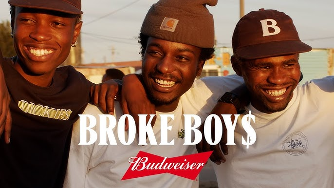
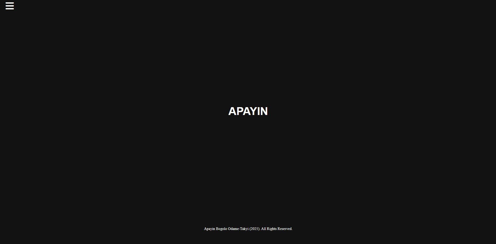

APAYIN
blogs
design
portfolio
profile
essays
×
Fashion and minimalism, a discussion on UI, UX and ethics within the South African brand BROKE
Looking at the dimensions of fashion websites and what is the relationship between fashion websites and the aesthetic choice of minimalism

The Age of Misinformation Leaves Marginalized Communities Under Threat
Exploring the effects of the Age of Misinformation on marginalized communities
Reflection on final website
A discussion on my final website. 